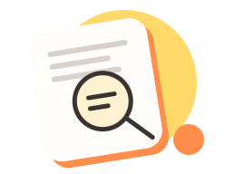

RepoLens
A clearer place to start.
Understand what a project does. Keep the original README one click away.

How to use
- Enter your AI provider's Chat Completions URL, model name, and API key if required.
- Save and confirm Chrome's permission to access the API domain.
- Open jeanlorencini/repolens and click “Generate summary” above the README when you want an explanation.
The original text remains available with the “View original README” button. No repository files are changed.
Manual mode is the default. Enable automatic generation from the extension icon only if you want README text sent to your provider on page loads, including private repositories. Provider tokens may be used on each refresh.
AI explanations may be inaccurate. Check the original documentation.